Un interlocuteur,toute la chaîne.
Quatre publics, onze prestations, une même promesse : capter le gisement là où il naît, le transformer dans nos installations et livrer une matière première aux spécifications de l'industrie.
À chaque public,ses prestations.
Un industriel n'attend pas la même chose qu'une intercommunalité ou qu'un éco-organisme. Notre offre est organisée pour que chacun trouve immédiatement la sienne.

Collecte & bennes sur site
Bacs, bennes et compacteurs posés dans l'enceinte de votre usine, enlèvements planifiés, traçabilité par bordereau.
Filière ferraille
Collecte, tri, cisaillage, broyage et préparation de ferrailles aux spécifications des aciéries électriques.

Non ferreux, aluminium, inox, métaux précieux
Tri et affinage du cuivre, de l'aluminium, du laiton, de l'inox, du zinc et du plomb ; fonderie d'aluminium intégrée.

Véhicules hors d'usage
Centres agréés, dépollution, démontage, broyage. Partenaire du schéma « Recycler Mon Véhicule » et de Volkswagen.
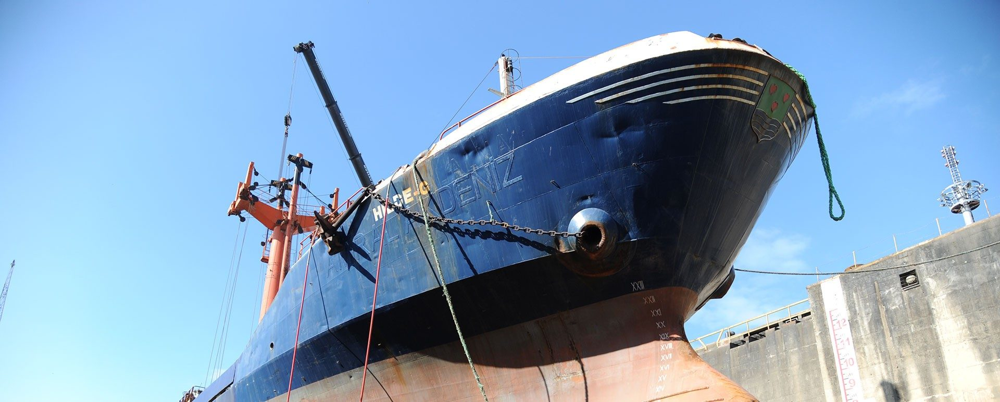
Démolition industrielle & déconstruction
Démantèlement d'usines, de lignes de production, de navires et d'ouvrages métalliques, avec valorisation intégrale des matériaux.
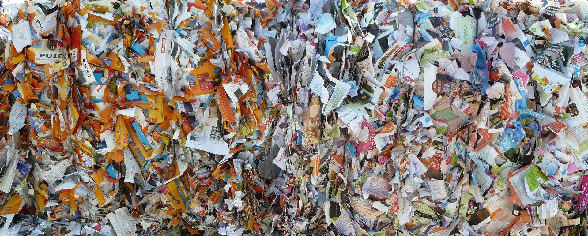
Destructions confidentielles
Archives, prototypes, stocks invendus, supports numériques : destruction certifiée, filmée sur demande, certificat remis.
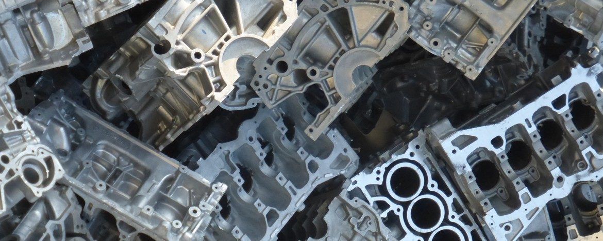
Gestion globale sur site industriel
Derichebourg s'installe dans votre usine : plateformes intégrées chez les sidérurgistes et les constructeurs automobiles, gestion de toutes les chutes de production.
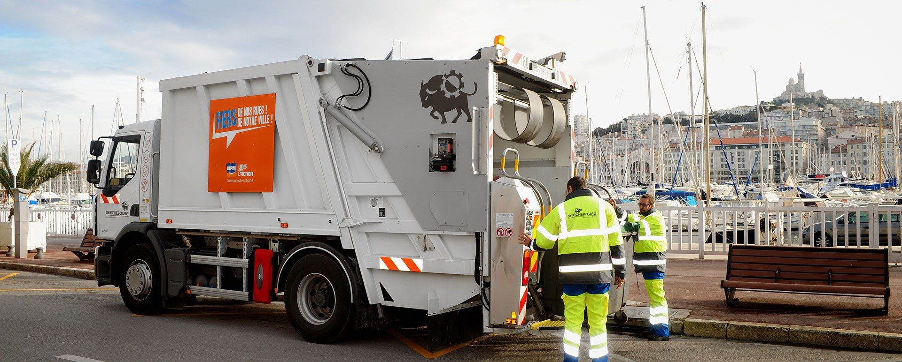
Collecte des déchets ménagers
Polyurbaine en France (Paris, Marseille), San Germano en Italie, Derichebourg Canada à Montréal : des marchés de grandes métropoles tenus dans la durée.

Nettoiement urbain
Balayage mécanisé, lavage, propreté de l'espace public avec une flotte aux dernières normes.
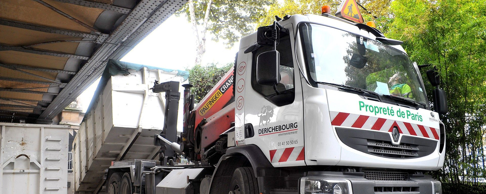
Gestion des déchèteries
Exploitation pour le compte des intercommunalités : accueil, tri, évacuation et valorisation des flux.
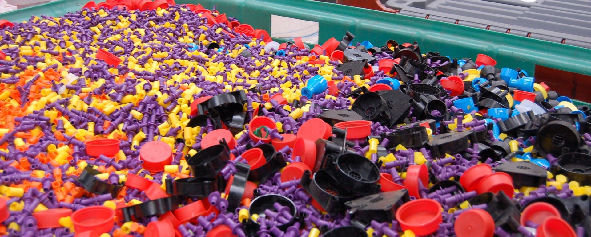
Centres de tri
Tri des collectes sélectives et préparation des matières pour les filières de recyclage.

DEEE : électroménager & électronique
Lignes frigos, ligne chauffe-eau de Bonneuil-sur-Marne, traitement sous contrat avec les éco-organismes agréés. Partenaire historique de la Fédération Envie.
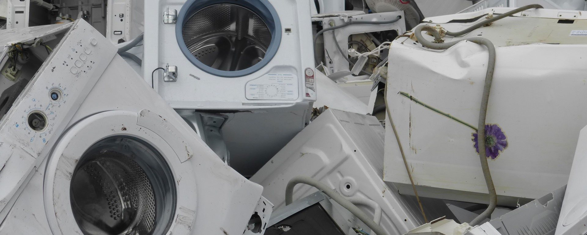
Ameublement (DEA) & nouvelles filières
Ameublement, bâtiment (PMCB), articles de sport et loisirs, bricolage et jardin : un interlocuteur unique sur six filières REP.
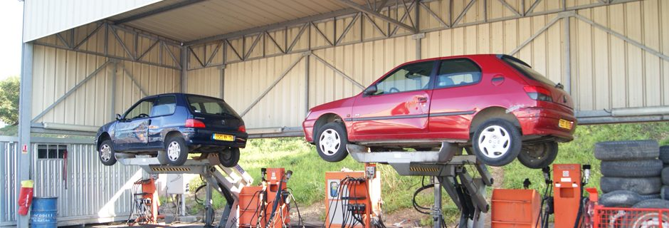
VHU & batteries
Schéma collectif « Recycler Mon Véhicule », schéma individuel Volkswagen, coentreprise LG Energy Solution pour les batteries lithium-ion.

Achat de métaux au détail
Cuivre, laiton, aluminium, inox, ferraille : vendez vos métaux au juste prix dans le centre le plus proche, avec pesée certifiée et paiement tracé.
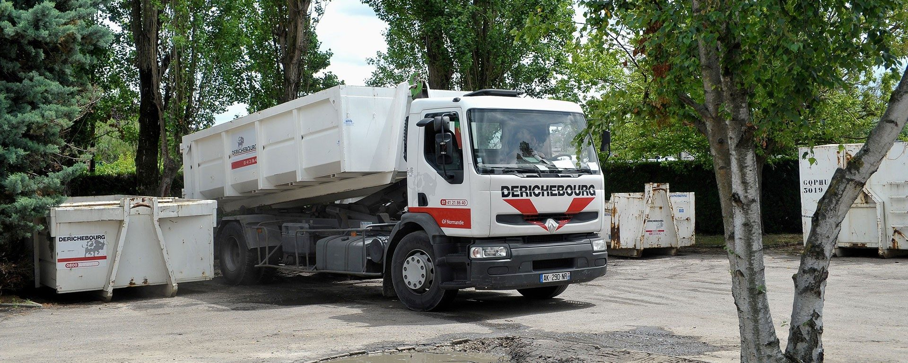
Location de bennes
Pour un chantier, un débarras ou un déménagement : dépôt, enlèvement et valorisation de la benne par Derichebourg.
De la carcasse à la matièreaux spécifications.
Défilez pour suivre la matière : réception, cisaillage, broyage, séparation magnétique, courants de Foucault, puis trois destinations. Chaque fragment est trié par sa nature physique, pas à la main.
Dix lignes d'activité,une même exigence.
Chaque filière a ses installations, ses agréments et ses filiales spécialisées : Inorec pour l'inox, Refinal pour l'aluminium, Corepa pour les DEEE, Polyurbaine pour les collectivités.
Collecte, tri, cisaillage, broyage et préparation de ferrailles aux spécifications des aciéries électriques. Plateformes in situ chez les sidérurgistes et les constructeurs automobiles. Environ 23 % du traitement des ferrailles en France.
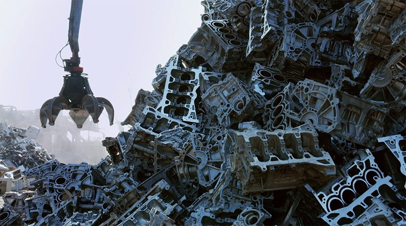
Tri et affinage du cuivre, de l'aluminium, du laiton, de l'inox, du zinc et du plomb. Fonderie d'aluminium en France (73 480 t de lingots), affinerie de plomb en Espagne (36 350 t), filiales Inorec (inox) et Refinal (aluminium). Croissance de 19,6 % au premier semestre 2025-2026.

Centres VHU agréés par les préfectures : dépollution (fluides, batteries, airbags), démontage des pièces réutilisables, broyage et séparation. Partenaire du schéma collectif « Recycler Mon Véhicule » (mars 2025) et du schéma individuel Volkswagen (juin 2025).
Collecte et traitement pour les éco-organismes agréés : lignes frigos, ligne chauffe-eau de Bonneuil-sur-Marne (septembre 2025, deux lignes supplémentaires en construction), ameublement (DEA). Partenaire historique de la Fédération Envie pour l'insertion.
Broyage et granulation des câbles : Saint-Marcel (2020), Escautpont (18 M€, inaugurée en juin 2024 avec le soutien de France Relance), Madrid (2025). Les grenailles de cuivre sont vendues directement aux fonderies. Coentreprise LG Energy Solution pour les batteries lithium-ion.

Derichebourg démantèle des usines entières, des lignes de production, des ouvrages et des navires, avec dépollution, désamiantage coordonné et valorisation intégrale des matériaux dans ses propres installations.
Destruction certifiée d'archives, de prototypes, de stocks invendus et de supports numériques, filmée sur demande, avec procès-verbal de destruction et valorisation des matières.
Derichebourg s'installe dans l'usine du client : bacs et bennes, gestion de toutes les chutes de production, plateformes intégrées dans l'enceinte des sidérurgistes et des constructeurs automobiles. Une solide expérience des plateformes in situ.
Collecte des déchets ménagers (Polyurbaine à Paris et Marseille, San Germano en Italie, Derichebourg Canada à Montréal), nettoiement urbain, gestion de déchèteries et de centres de tri pour les intercommunalités.
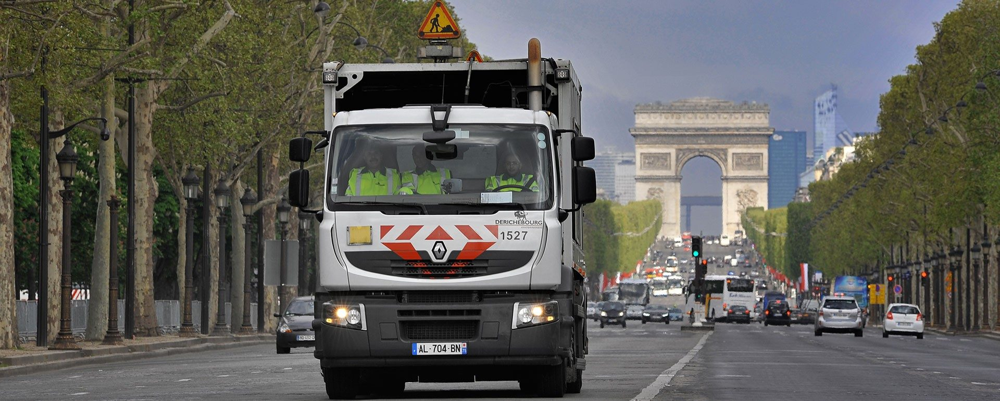
Réseau de centres d'achat de métaux et de produits en fin de vie en France et en Europe. Chacun devient acteur du recyclage : pesée certifiée, paiement tracé, matières acceptées et horaires publiés pour chaque site.